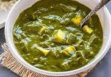

Palak paneer
AAh! The Spicy indian delight, Palak paneer

Description
Palak Paneer is a popular Indian Vegetarian Dish
consisting of
paneer (Indian cheese)
in a smooth, creamy and delicious spinach gravy
Ingredients
- cooking spray
- ½ pound paneer, cubed
- 2 tablespoons canola oil, divided
- 1 teaspoon cumin seeds
- 1 ½ cups water
Steps
- Heat a skillet coated with cooking spray over medium heat; fry paneer cubes until lightly browned on each side, about 5 minutes. Transfer paneer to a bowl.
- Heat 1 tablespoon canola oil in the same skillet used to cook paneer over medium heat. Add cumin seeds and cook until seeds are slightly red. Stir water, spinach, tomato, garlic, chile peppers, ginger, curry powder, ground coriander, and ground turmeric into cumin seeds. Season with salt.
- Bring spinach mixture to a boil and simmer until garlic is very soft, 15 to 20 minutes. Remove from heat and allow mixture to cool.
- Transfer spinach mixture to a blender or food processor; puree until smooth.
- Heat remaining 1 tablespoon canola oil in a saucepan over medium heat; add spinach puree and paneer cubes. Simmer until hot, about 5 minutes.
Go back